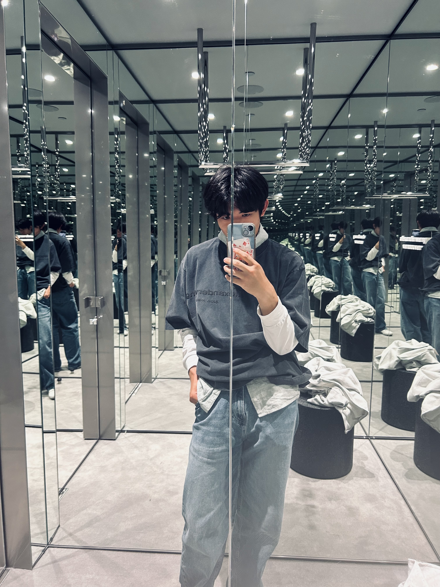
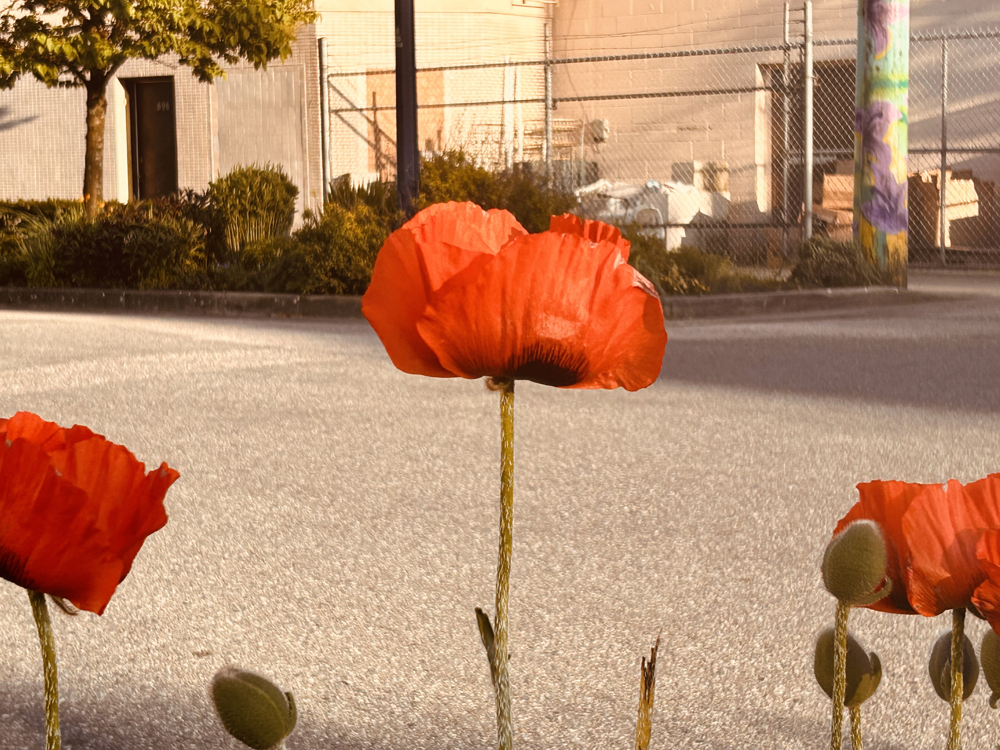
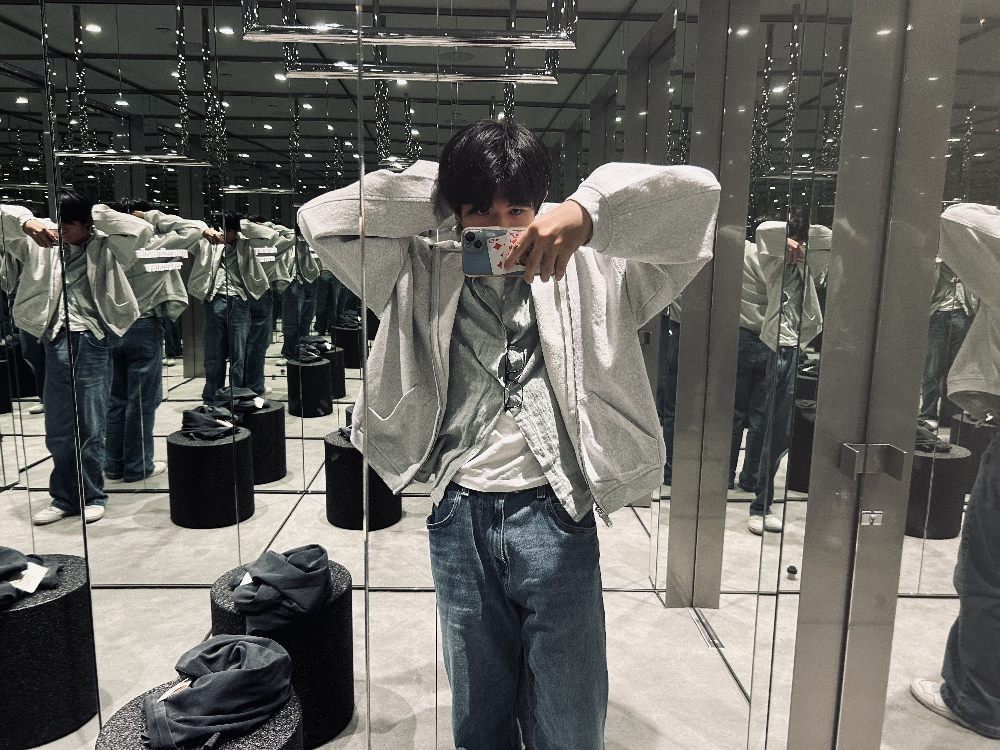

This is a scenery photo I took while walking home >:) I used the warm filter for this one and I really like doing phtography on my own. I don't have a socia, media page for it tho maybe I should make one HMMMM.

That one time I went to alexander wang and tried out thier peices just to take photos. I didn't buy. a single item cuz it was 100+ dollars WHAT DA FLIP! In this economy???!! Lowk taxxed their style and photos tho so that's a plus. GUYS DO I HAVE TASTE??!!

This is a flower with that same warm filter I used earlier, yall like it?? I tried emphasizing the orange collor hear and the flower itself.

LOL WHY IS MY HAIR LOWK FLAT HERE also do I look performativ enough??